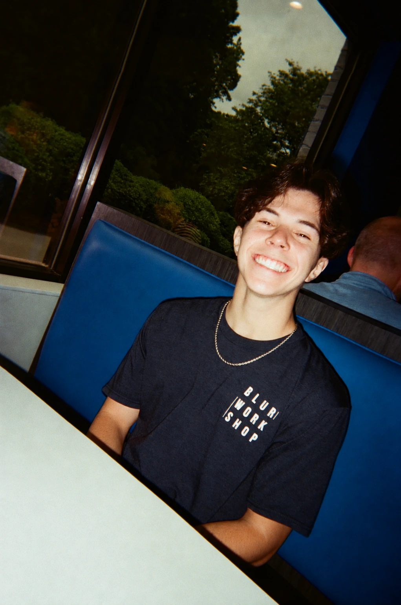

Selected work
Christ Centered.
Creatively Driven.
Photography, Film, and Design.
Selected work.
01 — Portfolio02 — About
Hey, I’m Landon!
I’m Landon Garner, a self-taught photographer, videographer, and graphic designer. I’m also a student at Auburn University.
I’m driven by the commission given to followers of Jesus in Matthew 28, “Go therefore and make disciples of all nations.” My aim is to use my spiritual and creative gifts to make the name of Jesus known among all people.
I work primarily with First Baptist Church of Opelika and Auburn University. If you need any creative help, I’d love to help you make something really, really cool!
NameLandon Garner
PracticePhoto, Video, Design